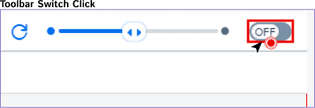

Toolbar Slider
Toolbar Slider로 미리보기 화면을 확대/축소할 수 있다.
1. Toolbar Slider의 이동버튼을 오른쪽으로 slide.
(미리보기 화면이 확대)
(미리보기 화면이 확대)
2. Toolbar Slider의 이동버튼을 왼쪽으로 slide.
(미리보기 화면 축소)
(미리보기 화면 축소)
3. Toolbar Slider Reset버튼 클릭.
(미리보기 화면 초기화)
(미리보기 화면 초기화)
Toolbar Switch On & Off
Toolbar Switch로 미리보기 화면을 최대화 또는 원상태로 변경 가능하다.
1. Toolbar Switch가 On일 때 미리보기 화면이 최대화 된다.

2. Toolbar Switch가 Off일 때 미리보기 화면이 원상태로 변경된다.

미리보기 영역 UI 속성
미리보기 영역의 UI를 클릭하면 Attribute 영역이 해당 UI에 대한 내용으로 변경.
1. 미리보기 영역의 UI를 클릭하면 해당 Object 정보 및 Attribute영역 변경.

미리보기 영역 UI를 UX design 영역에 Drag & drop
미리보기에 있는 UI를 UX Design영역에 있는 UI에 Drag & Drop 할 수 있다.
1. 미리보기에 있는 UI를 Drag하여 UX Design영역의 UI에 Drop.
2. 미리보기에 있는 UI를 같은 영역에 있는 UI에도 Drag & Drop 할 수 있다.
(단 같은 Aggregation에 있는 UI는 위치만 변경.)
(단 같은 Aggregation에 있는 UI는 위치만 변경.)
미리보기 영역 UI Context Menu
미리보기 영역에서도 UI의 Context Menu를 사용할 수 있다.
1. 작업 할 UI에 마우스 오른쪽 클릭을하여 Insert Element를 클릭.
2. UX Design영역에서도 대상 UI 추가.